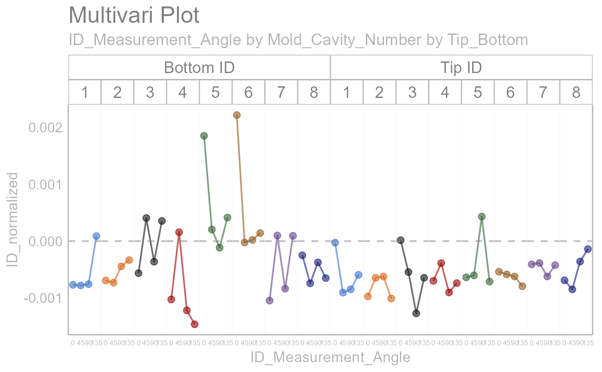

Draws a multivari small multiples plot
Usage
draw_multivari_plot(
data,
y_var,
grouping_var_1,
grouping_var_2,
grouping_var_3,
grouping_var_4,
data_point_label = NULL,
plot_means = FALSE,
x_axis_text_size = 11,
panel_text_size = 14,
point_size = 2.5,
line_size = 0.7,
alpha = 0.6
)Arguments
- data
input dataset to be plotted (required)
- y_var
response variable, Y (required)
- grouping_var_1
select column for lowest level grouping variable (required)
- grouping_var_2
select column for second level grouping variable (required)
- grouping_var_3
select column for third level grouping variable (optional)
- grouping_var_4
select column for fourth level grouping variable (optional)
- data_point_label
select column to label data points (optional)
- plot_means
logical. if FALSE, default, means for mid-level factor are not plotted (optional)
- x_axis_text_size
set x axis text size. options are "normal" (default), "small", "xs" and "none" (optional)
- panel_text_size
set panel text size. By default, it is set to 14 (optional)
- point_size
Set point size. By default, it is set to 2.5 (optional)
- line_size
Set line size. By default, it is set to 0.7 (optional)
- alpha
Set transparency. By default, it is set to 0.6 (optional)
Examples
library(dplyr)
#>
#> Attaching package: 'dplyr'
#> The following objects are masked from 'package:stats':
#>
#> filter, lag
#> The following objects are masked from 'package:base':
#>
#> intersect, setdiff, setequal, union
library(ggh4x)
#> Loading required package: ggplot2
#> Warning: package 'ggplot2' was built under R version 4.2.2
polar_small_multiples_data %>%
filter(ID_Measurement_Angle %in% c(0, 45, 90, 135)) %>%
normalize_observations(y_var = ID,
grouping_var = Tip_Bottom,
ref_values = c(0.2075, 0.2225)) %>%
draw_multivari_plot(y_var = ID_normalized,
grouping_var_1 = ID_Measurement_Angle,
grouping_var_2 = Mold_Cavity_Number,
grouping_var_3 = Tip_Bottom,
x_axis_text = 6) +
draw_horizontal_reference_line(reference_line = 0)
#> Joining, by = "Tip_Bottom"
